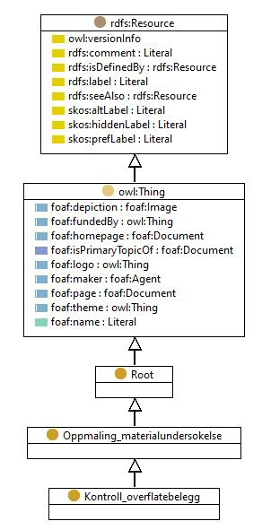

https://ontologi.atlas.vegvesen.no/v441/core/v441-owl#Kontroll_overflatebelegg
Class Kontroll_overflatebelegg

rdf:type
owl:Class
rdfs:label
Kontroll - overflatebelegg
Control - surface coatings
rdfs:subClassOf
Oppmaling_materialundersokelse
owl:disjointUnionOf
[
MEK_test
,
Tykkelse_overflatebelegg_stal
,
Heft_overflatebelegg_stal
,
Visuell_inspeksjon_overflatebelegg
,
Overmalbarhet_gammelt_belegg
,
Kontroll_saltmengde_klorider
,
Inntrengningsdybde_vannavvisende_impregnering_betong
]
References
as owl:disjointUnionOf (
Oppmaling_materialundersokelse
)
as rdfs:subClassOf (
Kontroll_saltmengde_klorider
,
Heft_overflatebelegg_stal
,
Inntrengningsdybde_vannavvisende_impregnering_betong
,
Tykkelse_overflatebelegg_stal
,
Visuell_inspeksjon_overflatebelegg
,
Overmalbarhet_gammelt_belegg
,
MEK_test
)
Generated with
TopBraid Composer
by
TopQuadrant, Inc.